Scene 1Warm-Up
▶ Start hereHow your Wonder Films lessons work1-minute videoOpen ▾
🎯 TodayI can…
- compare plant growth under different light conditions.
- create a graph to display plant growth data.
- use evidence from data to explain how light affects plant growth.

🔎 Mystery specimenWhat can a few sprouts show you?
What to do: Press Inspect specimen. Move the magnifying lens over the plant, then tap 3 things you notice.
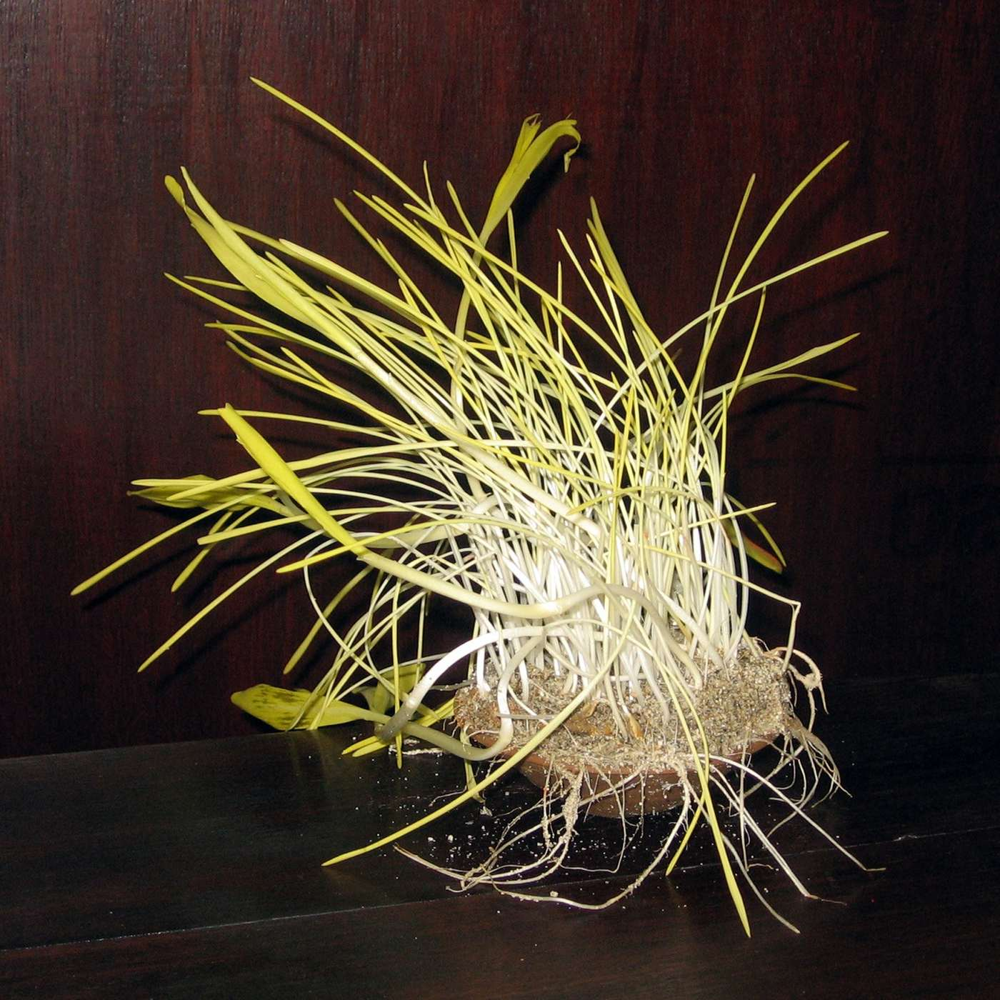
📚 Word WallWords scientists use
What to do: Tap or click each card to flip it and read what the word means. Tap 🔊 to hear the word.
Scene 2The Lesson
☀️ Part 1Why Plants Need Light
Plants make their own food using sunlight. This is called photosynthesis. Without enough light, a plant can't make the energy it needs to grow tall and strong.
When a plant gets plenty of light, it grows faster. When light is weak or blocked, growth slows down, sometimes a lot.
🎞️ Put the scenes in orderHow do you run a fair test with light?
What to do: Drag each photo into the film strip, from first to last. You can also tap a photo, then tap a frame. Get the order right and your strip becomes a movie.
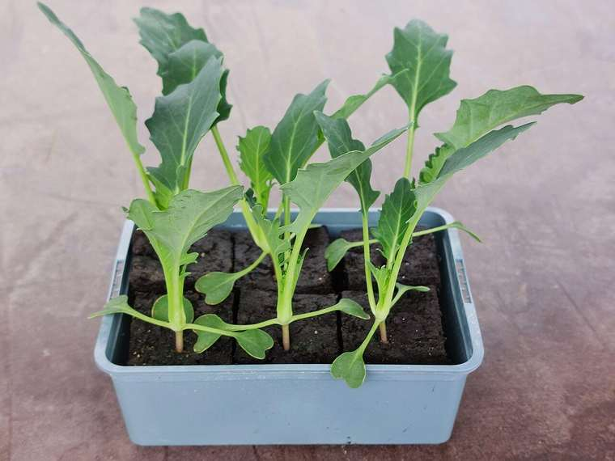
Look at the movie's Day 7. Both plants got the same seeds, soil, and water. Why is the bright-light plant taller?
🔬 Part 2A Fair Test Changes One Thing
In a fair test, scientists change only one thing at a time. In this investigation, the only difference between the two plants is light. The soil, the water, and the pot all stay the same.
That way, if the plants grow differently, we know light is the reason. The one thing we change on purpose is called the variable.
🧪 The Light LabWhich plant grew in bright light, and which grew in the dark?
What to do: Follow the steps one at a time. You will pick, test, and then explain.
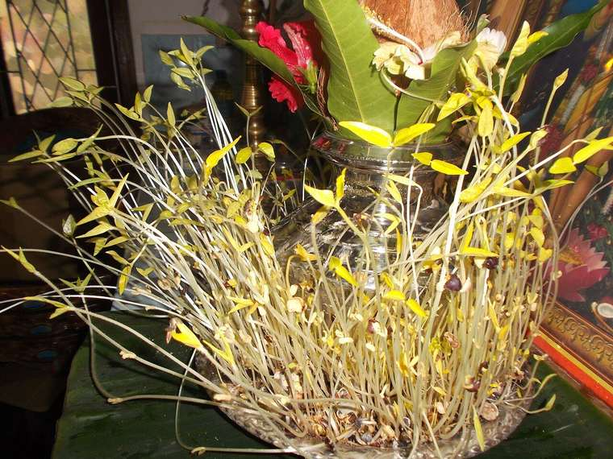
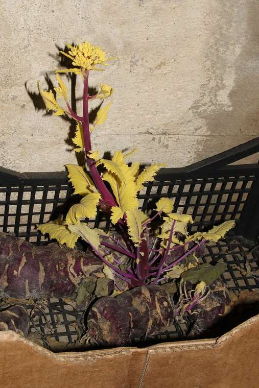
📏 Part 3Reading the Data
Scientists measure plant height in centimeters and write it in a data table. Then they build a graph, so the pattern is easy to see.
Light changes things in nature, too. Sunlight gets dimmer as it goes down through water. Let's ride down and find out where plants can still grow.
🌊 The light elevatorHow deep can plants grow?
What to do: First, make a prediction. Then brush the glowing layer: drag across it (or tap it again and again) until the plant shows.
How deep do you think plants can grow?
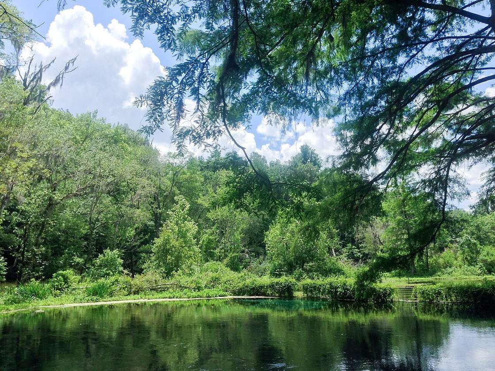
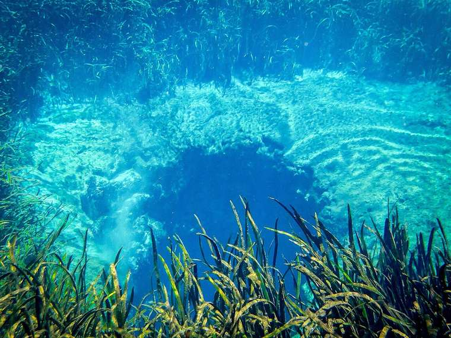
Level 1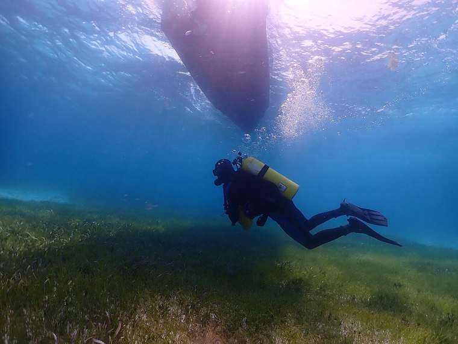
Level 2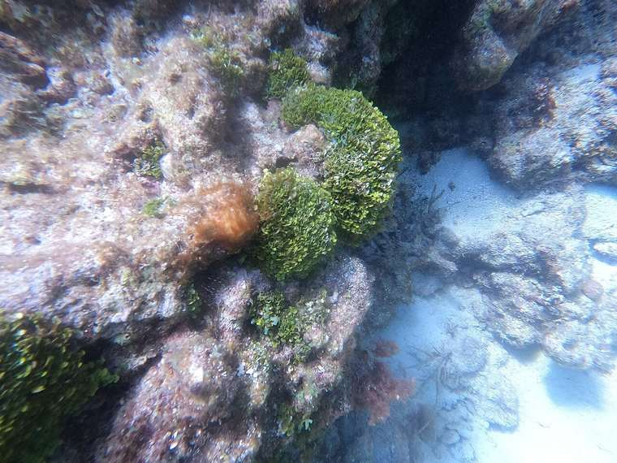
Level 3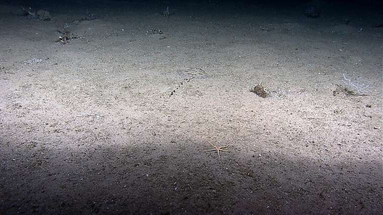
Level 4Plants grow only where enough light reaches them. Less light means less food, so fewer plants can grow. With no light, plants can't grow at all.
The deep-sea floor has water and sand, but no plants. Why can't plants grow there?
A garden with 180 lamps
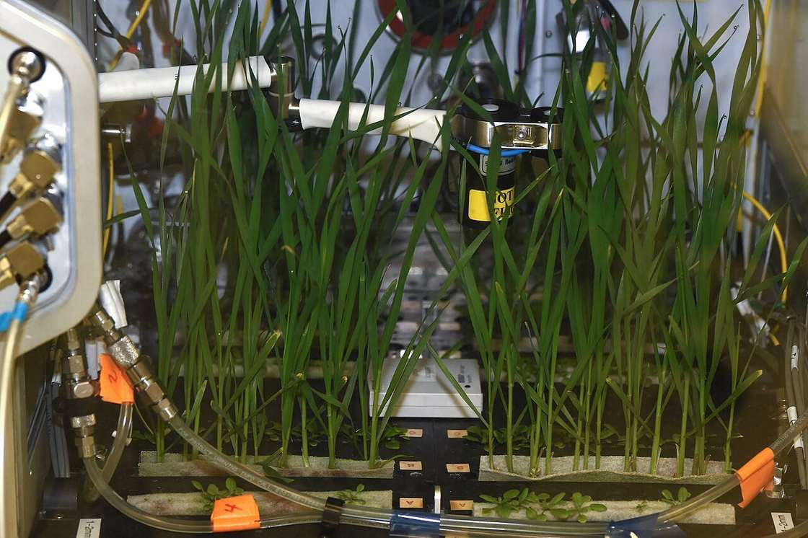
There's no sunshine inside the space station, so NASA built plant chambers full of lamps. One of them, the Advanced Plant Habitat, has about 180 small lamps that scientists can change from Earth.
They turn some colors up and others down, one change at a time, to see which light helps plants grow best. It's a fair test, in space!
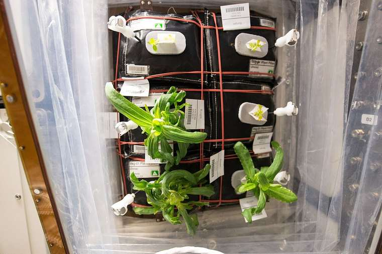
🗂️ Part 4Who Blocked the Light?
What to do: Pick 3 cards, one at a time. Tap a clue you see, then pick what it is. Predict where it grows, and watch its home appear.
| Plant | What I observe | The clue | Its home | My evidence |
|---|
🌍 Rebuild the plant's homeUse your evidence to rebuild the plant's home OPTIONALOpen ▾
What to do: Pick one you solved. Pick the place it points to, then pick the living things that belong there.
Pick one from your chart and explain it.
Start with: "Plant __ has…"
Scene 3Self-Check
What does a scientist call the information collected during an investigation?
In this investigation, both plants started at 2 cm but grew differently. What does that tell us?
Why is a graph helpful when comparing plant growth data?
Scene 4Assignment
🔍 Part ARead the data
What to do: Read each one. Pick the best answer, or type your answer.
1. Build a bar graph of this sample data from two young bean plants. Make each bar match its number in the table.
How tall did each plant grow?
| Bright light | Dim light | |
|---|---|---|
| Day 1 | 2 cm | 2 cm |
| Day 3 | 4 cm | 3 cm |
| Day 5 | 7 cm | 4 cm |
| Day 7 | 10 cm | 5 cm |
Tap inside a bar's column at the right height, or use ＋ and －, until each bar matches the table. Then press Check my graph.
2. On which day did the bright-light plant first grow taller than the dim-light plant?
3. How much taller was the bright-light plant than the dim-light plant by Day 7?
4. Did the difference between the plants grow bigger over time, stay the same, or get smaller?
5. How can you tell? Use numbers from the table or your graph.
🚀 Part BShort answer
What to do: Answer in complete sentences. Use your science words.
1. What was the variable in this investigation, the one thing that was different between the two plants?
2. Why did scientists keep everything the same except for the light? What would happen if both light and water were different?
✍️ Write and explainWhat does your investigation tell you?
What to do: What does your investigation tell you about how light affects plant growth? Answer the three questions. Use all three of the science words under the boxes.
Start with: "In my investigation, I noticed that…"
Start with: "The evidence in my data shows that…"
Start with: "This makes sense because plants need light to…"
🎨 Part CDraw and label
What to do: Draw both plants as they looked on Day 7. Label the height of each one, and write its light condition next to it.
🎬 Your question from Scene 1Can you answer it now?
What do you still wonder about? Write your question here. Then answer it.
📋 My answersEverything you wrote, in one place
(Your answers show up here as you write.)
How to turn in: Copy your answers and paste them into the Canvas assignment. Or download the file and upload it. Then press Save my drawing in Part C and upload your drawing too.
✅ Checklist
What to do: Tap each item when it is done. Items you finish on the page check themselves.
- My evidence chart has 3 plants and my explanation.
- Part A: my bar graph and all my answers.
- Part B: questions 1 and 2.
- Part C: my drawing and both labels.
- Write and explain, using evidence, condition, and growth rate.
🎬 Premiere my light-test storyYour exhibit
What to do: Check your exhibit. Pick the one you wrote about, add your first name, then press Premiere film.
I observed…
I think it was…
My evidence…
It tells us…
🎞️ This film's frames
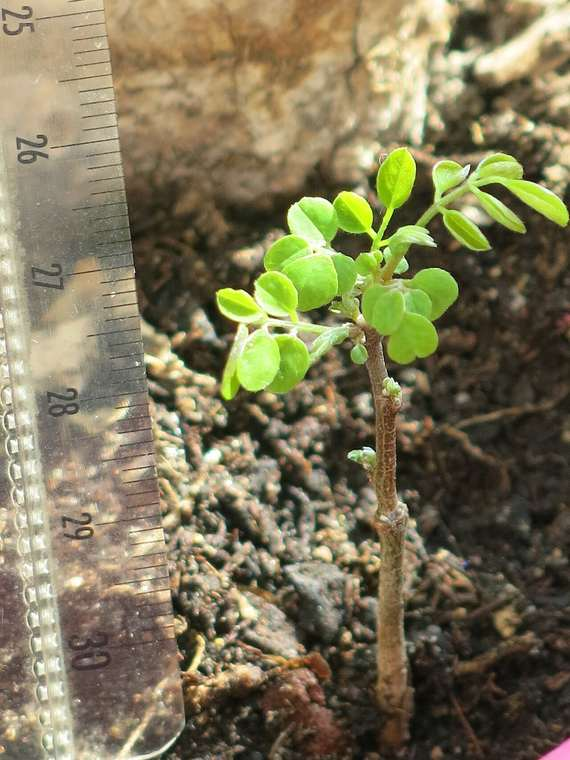
The fair test
The Light Lab
The light elevator
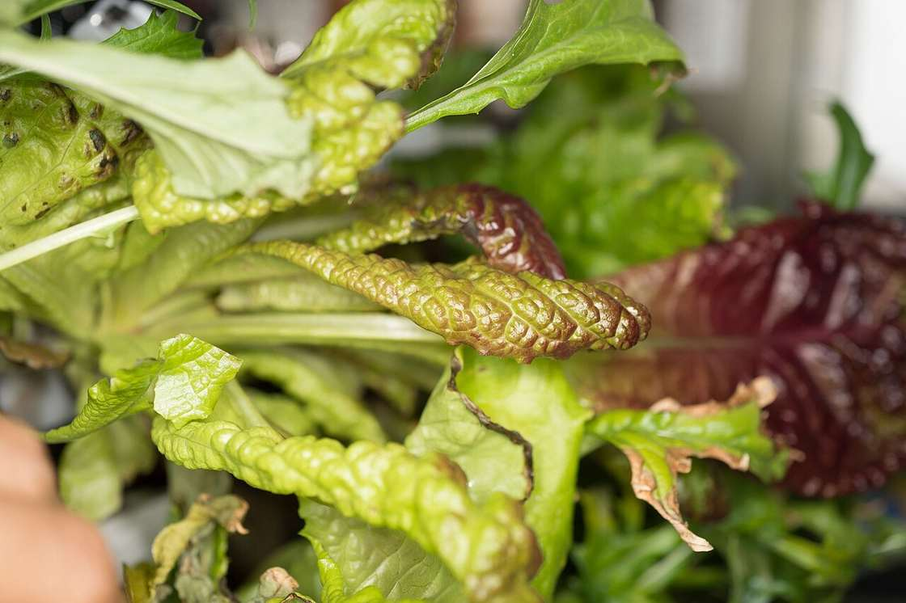
Who blocked the light?
Earn all four frames in the Lesson, then finish the checklist.
🔜 Coming up next20.01 · How Do Plants Respond to Their Environment?
Next time, you'll find out how plants respond when light, water, and gravity change around them, even though they can't walk away.
Photo and music credits
- Advanced plant habitat, NASA, Public domain
- Plants netted chain fern Bladen Lakes SF ncwetlands AM (3), ncwetlands.org, CC0
- Hammock (forest) floor inside Florida's Myakka State Park 1, Will Pittenger, CC BY-SA 3.0
- Earth and international space station, NASA / pingnews.com, Public domain
- Brassica oleracea gongylodes without sun, Crusier, CC BY-SA 3.0
- Kohlrabi EPT-Jungpflanzen-2--Josef Schlaghecken, Schlaghecken Josef, CC BY-SA 4.0
- Veggie Team Processes Pillows into Veg-03 MNO Seed Film (KSC-20250529-PH-CSH0…, NASA Kennedy Space Center / NASA/Cory S Huston, Public domain
- SpaceX CRS-27 Liftoff (KSC-20230314-PH-SPX02 0002), NASA Kennedy Space Center / SpaceX, CC0
- Etiolation of plants, சஞ்சீவி சிவகுமார், CC BY-SA 4.0
- Mission Beach - etiolated plants - 2018, RightCowLeftCoast, CC BY-SA 4.0
- Mission Beach - etiolated plants - 2018 (1), RightCowLeftCoast, CC BY-SA 4.0
- Kohlrabi Keimlinge in EPT--Josef Schlaghecken, Schlaghecken Josef, CC BY-SA 4.0
- Regadera, jardín del molino, Sierra de San Felipe, Setúbal, Portugal, 2012-05…, Diego Delso, CC BY-SA 3.0
- New seedling of Robinia pseudoacacia D180326, Tangopaso, Public domain
- Nalaswan barley shoots, Kamal Ratna Tuladhar, CC BY-SA 3.0
- Iss072e350731 (12-6-2024) --- The Spaceflight Microbiome of a Food Crop Grown…, NASA Johnson Space Center, Public domain
- Strawberry plants growing along black plastic mulch in a farm field during sp…, Shixart1985, CC BY 2.0
- "Strawberry Field, Florida" (10724861674), State Library and Archives of Florida, Public domain
- ISS-44 VEGGIE Red Romaine Lettuce, NASA, Public domain
- ISS-54 Veggie-03 with lettuce plants, NASA, Public domain
- ISS-40 Vegetable Production System (Veggie), NASA, Public domain
- ISS-53 Red lettuce being cultivated inside the Veggie facility, NASA, Public domain
- Expl7069 (9734692047), NOAA Photo Library, Public domain
- Ichetucknee Springs (48929003331), Florida Guidebook from Florida, USA, CC BY 2.0
- Scuba Diver in Seagrass - 53006198744, Symbiosis, CC BY 2.0
- Halimeda Pickles Reef 20230713, Jstuby, CC0
- Ichetucknee Springs (48929004991), The Florida Guidebook from Florida, USA, CC BY 2.0
- ISS-46 Zinnia flowers in the Veggie facility, NASA, Public domain
- Music: Johann Strauss II, The Blue Danube (An der schönen, blauen Donau), Op. 314, performed by the United States Marine Band, public domain (Wikimedia Commons).
- Opti the owl: Optima Academy. Sound effects are made by the page. The fair-test movie and the light elevator are models; every plant photo is real. The deep-sea photo was lit by a NOAA robot's lamps.